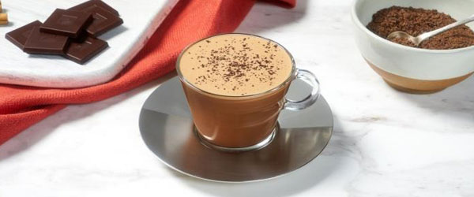

모카
(MOCHA)
모카는 커피와 초콜릿만으로 만들 수 있는 간단한 레시피로, 위에 시나몬 파우더를 얹으면 더욱 매력적으로 즐길 수 있습니다.
- 초콜릿 4 개
- 우유 100 ml
- 에스프레소 40 ml
- 시나몬
- 1
-
네스프레소 초콜릿 4개(20g)를 조각내어 저그에 넣습니다.
-
우유 100ml를 저그의 최소 눈금선까지 부어 줍니다.
-
네스프레소 커피를 에스프레소(40ml)로 추출하여 저그에 부어 줍니다.
-
뚜껑을 닫은 후, 바리스타 머신의 시작버튼을 누릅니다.
-
준비된 음료를 카푸치노 잔에 붓고 위에 시나몬(선택사항)을 올려 줍니다.
완성된 레시피를 즐깁니다.